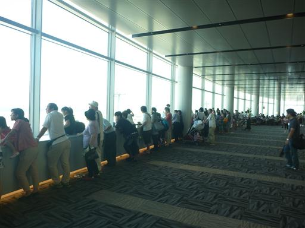
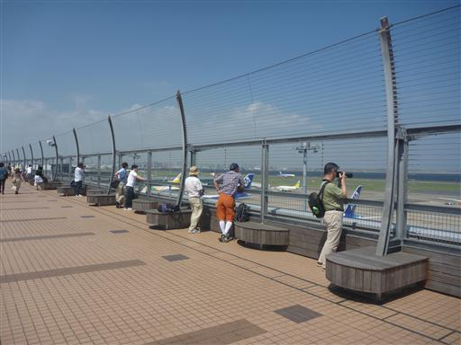
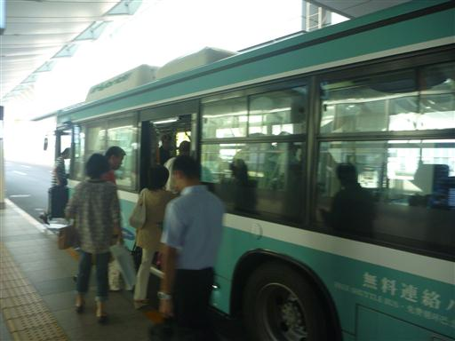

羽田空港
| 日付 | 2013年8月31日（土） |
|---|---|
| メンバー | 家族（長女・2歳） |
| アクセス | 電車 |
今週から遅めの夏休みを取得。
南関東は晴れているが、秋雨前線が居座っているため
天候は不安定。山向きの天気ではない。
暇を持て余すのは嫌なので、長女を連れて
羽田空港に行ってみることにする。
今回は電車で移動。羽田空港に着いて昼食をとったら展望デッキに移動する。
展望デッキと言えばガランとしたイメージを持っていたが、
意外にも大勢の観光客が訪れていてびっくり。

展望デッキからはたくさんの飛行機を眺められる。背景は東京湾だ。
窓の位置が高く子供を抱っこしないといけないのが辛いところだ。

屋外の展望所に移動。くそ暑いため、こちらの人影はまばらだ。
大きなカメラを構えている人がたくさんいる。

次々と飛行機が飛び立っていく。

長女がバスに乗りたいと言ったので、羽田空港内の無料シャトルバスで
国際線ターミナルに移動したあと帰宅する。
国際線から自宅までの電車運賃の方が国内線からよりも40円ほど安かったため、
国内線に乗る場合でも、国際線まで電車で行き、そこから無料バスに乗る方が少しお得ということになる。
思わぬ（無駄）知識を手に入れられた週末となった。

他の記録